Class Fe
This class represents spaces of finite element functions. An instance of Fe represents a vector space  where 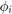 are Finite Element functions defined on a mesh. By finite element functions, we mean the following conditions:
where 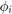 are Finite Element functions defined on a mesh. By finite element functions, we mean the following conditions:
- There exists a set of points 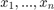 on the mesh, called dofs, such that 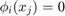 for 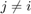 and 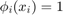 for all 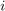.
- Each element E of the mesh is the image of the reference domain 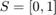 by an affine mapping 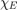. There exist B (basis) functions 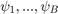 defined on S, and points 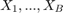 (reference dofs) of S such that 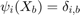. For every 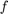 in 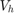, there holds 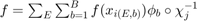 almost everywhere.
- Each dof 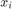 located on an element E coincides with 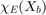 for some 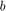. If is shared by several elements 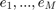, then there exists 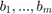 such that 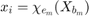 for all 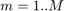.
Contents
Abstract FE and concrete classes
Fe.m is an abstract class. This means that one cannot create an instance of Fe.m. However, one can create concrete classes implementing Fe.m. This is due to the fact that many types of finite element functions exist, with some specific aspects (number of basis functions, location of the dofs,...) but they are involved in Galerkin computations with similar algorithms. The algorithms that are common to every type of Fe space are written directly in the abstract class. The concrete classes must implement only a few function to inherit from Fe. Those are
- X,dof_jb = dof(obj), which returns the coordinates of the dofs on the mesh and an array dof_jb such that, for each element e_j and index b, dof_jb(j,b) = i where is such that that 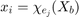.
- r = psi_b(obj,b,x), which, given some reference coordinates x and an index b, returns the 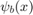.
- s = name(obj), which simply indicates the name of the finite element functions.
clean; c = openline(0,2); m = meshCurve(c,2); % Example 1: Vh = P0(m); % Space of piecewise constant functions on the mesh. [X,dof_jb] = dof(Vh); disp('P0 dofs :') disp(X); disp('P0 dof_jb') disp(dof_jb); figure plot(m); hold on plot(X(:,1),X(:,2),'r*','DisplayName','dofs'); legend show title('P0 elements') % Example 2: Vh = P1(m); % Space of piecewise linear functions on the mesh. [X,dof_jb] = dof(Vh); disp('P1 dofs :') disp(X); disp('P1 dof_jb') disp(dof_jb); figure plot(m); hold on plot(X(:,1),X(:,2),'r*','DisplayName','dofs'); legend show title('P1 elements') % Example 3: Vh = P2(m); % Space of piecewise quadratic functions on the mesh. [X,dof_jb] = dof(Vh); disp('P2 dofs :') disp(X); disp('P2 dof_jb') disp(dof_jb); figure plot(m); hold on plot(X(:,1),X(:,2),'r*','DisplayName','dofs'); legend show title('P2 elements');
P0 dofs :
0.5000 0
1.5000 0
P0 dof_jb
1
2
P1 dofs :
0 0
1 0
2 0
P1 dof_jb
1 2
2 3
P2 dofs :
0 0
1.0000 0
2.0000 0
0.5000 0
1.5000 0
P2 dof_jb
1 4 2
2 5 3
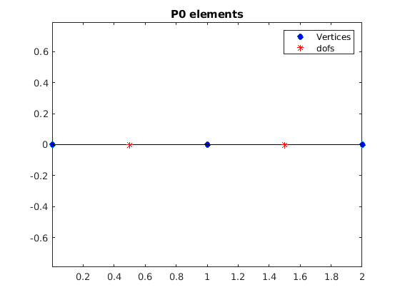 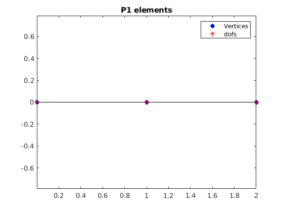 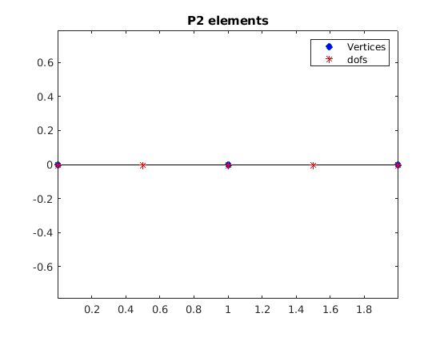 Matrices of some relevant linear maps.
In Galerkin Boundary Element methods, the linear systems take the form
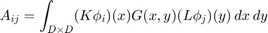
where 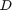 is a domain of integration and 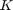 and 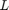 are some linear operators (possibily identity) and 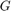 is a possibily singular kernel. Using Gaussian quadratures and ignoring the singularity integrals for the time being, this takes the form
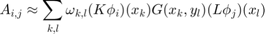
This can be written compactly as 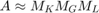 where
- 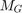 is the matrix given by 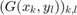
- 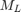 is the matrix of the linear map which, to the values of a member of 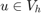 at the dofs, associates the values of 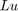 at the points 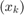.
In the particular case where 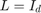, the column of is simply the evalutation of at the points . This matrix can be computed by the following command:
% P1 : Vh = P1(m); Y = [linspace(0,2,100)', zeros(100,1)];% Query points X = dof(Vh); M = dof2Y(Vh,Y); figure plot(m); hold on plot(X(:,1),X(:,2),'r*') plot(Y(:,1),full(M)); legend('vertices','dofs','phi_1','phi_2','phi_3') title('P1 elements') % P2 : Vh = P2(m); Y = [linspace(0,2,600)', zeros(600,1)];% Query points X = dof(Vh); M = dof2Y(Vh,Y); figure plot(m); hold on plot(X(:,1),X(:,2),'r*') plot(Y(:,1),full(M)); legend('vertices','dofs','phi_1','phi_2','phi_3','phi_4','phi_5') title('P2 elements')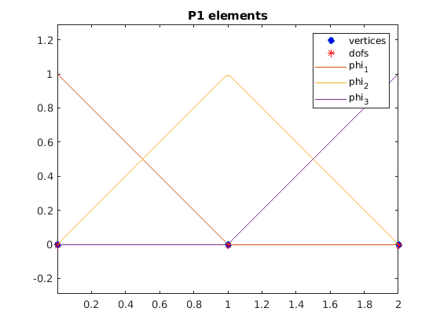 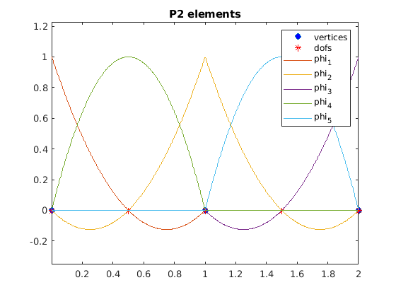
If L is not the identity mapping, just compute the matrix by M = dof2Y(L(Vh),Y). If 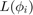 has several componenents (for example if L is defined by 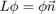 where 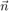 is the normal vector on the mesh), then M will be returned as a cell with M{k} containing the matrix of the k-th component of .
% Example: tangential gradient of P2 elements Vh = P2(m); Y = [linspace(0,2,600)', zeros(600,1)];% Query points X = dof(Vh); M = dof2Y(grad(Vh),Y); figure plot(X(:,1),X(:,2),'r*') hold on plot(Y(:,1),full(M)); legend('dofs','grad(phi_1)','grad(phi_2)','grad(phi_3)','grad(phi_4)','grad(phi_5)') title('grad(P2) elements') axis auto xlim([0,2]) ylim([-4,4]) % Example: multiplication by x of P1 elements m = meshCurve(circle,7); Vh = P1(m); X = dof(Vh); Y = linspace(m,20); M = dof2Y(xtimes(Vh),Y); figure plot(X(:,1),X(:,2),'r*') hold on plot(Y(:,1),full(M{1})); plot(m) title('x1 * P1 elements') figure plot(X(:,1),X(:,2),'r*') hold on plot(Y(:,1),full(M{2})); plot(m) title('x2 * P1 elements')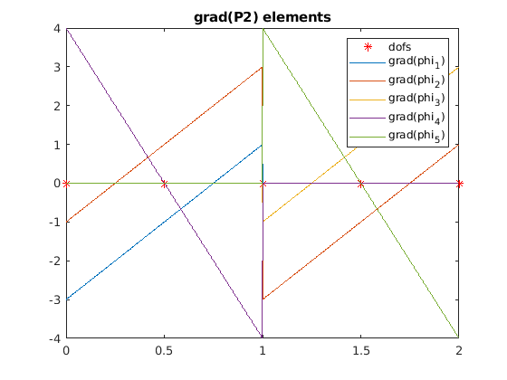 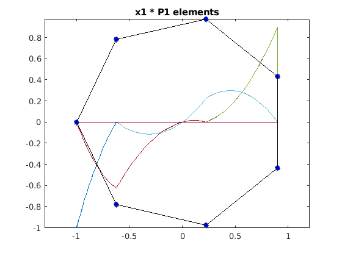 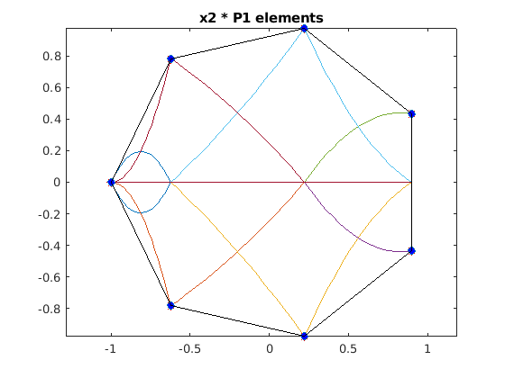